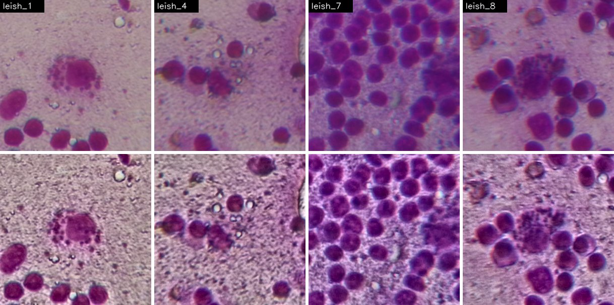

exp06 — YOLO11m + realce CLAHE + aumento de dados
| Modelo | YOLO11m (20M) |
| Entrada | CLAHE no canal L (Lab), volta para RGB |
| Hiperparâmetros | imgsz 512, AdamW, lr0 5e-4, cos_lr, aug forte (hsv 0.03/0.9/0.6, rot 15°, flipud 0.5, mixup 0.1) |
| Validação | 6 folds por lâmina (5 de treino, 1 de validação e 2 de teste), a mesma divisão de todos os experimentos |
Resultado
Conjunto de teste, média ± desvio padrão nos 6 folds.
| Precisão | Recall | mAP50 | mAP50-95 |
|---|---|---|---|
| 0,458 ± 0,113 | 0,517 ± 0,065 | 0,435 ± 0,118 | 0,167 ± 0,039 |
Detalhes
Objetivo
Atacar a generalização entre lâminas pelo lado dos dados. No notebook, é o "experimento 5".
O que foi feito
- Realce CLAHE no canal L do espaço Lab. Antes de escolher, foi medido o quanto cada um de 9 canais de cor (RGB, HSV e Lab) separa a leishmania do fundo. O matiz (H) foi o canal que menos separa, porque parasita e fundo têm o mesmo corante. Os que mais separam são os de intensidade (R, L e V), já que as leishmanias são mais escuras que o fundo. O CLAHE (equalização de histograma adaptativa com limite de contraste) aumenta o contraste local da luminosidade em pequenas regiões da imagem, sem estourar o ruído. A imagem é convertida de volta para RGB, então a cor original é preservada. Dataset gerado:
exp06_recortes_512_realce_clahe. - Aumento de dados mais forte: jitter de cor HSV maior (hsv 0,03/0,9/0,6), rotação de até 15° e flip vertical (0,5), já que a lâmina não tem orientação, e mixup 0,1 (mistura de duas imagens).
- Taxa de aprendizado menor: AdamW com lr0 5e-4. Antes, o
optimizer=autoescolhia cerca de 2e-3. - YOLO11m (20M parâmetros), imgsz 512, sem ampliar o recorte.
Exemplo da entrada

exp06_recortes_512_realce_clahe), com mais contraste local e cores preservadas.Por lâmina (mAP50)
Melhor: leish_7 (0,622). Pior: leish_3 (0,109). leish_1 (0,437) e leish_9 (0,485) tiveram os melhores valores até então.
Épocas por fold (total / melhor)
fold 1: 64/24 · fold 2: 138/98 · fold 3: 148/108 · fold 4: 81/41 · fold 5: 73/33 · fold 6: 101/61
Observações
- Teve o melhor recall entre os experimentos com o macrófago visível (0,517): o aumento de dados reduziu os falsos negativos.
- Mudaram quatro fatores juntos, então não dá para saber qual deles ajudou. A receita de aumento de dados e de otimizador deste experimento foi mantida em todos os experimentos seguintes.
Período: jul. 2026 · Notebook: 03_experimentos anteriores/exp06_yolo11m_realce/deteccao_yolov11m_realce.ipynb
mAP50 por lâmina
Média entre os folds em que a lâmina caiu no teste.
| Lâmina | mAP50 |
|---|---|
| leish_1 | 0,437 |
| leish_2 | 0,317 |
| leish_3 | 0,109 |
| leish_4 | 0,137 |
| leish_5 | 0,529 |
| leish_7 | 0,622 |
| leish_8 | 0,349 |
| leish_9 | 0,485 |